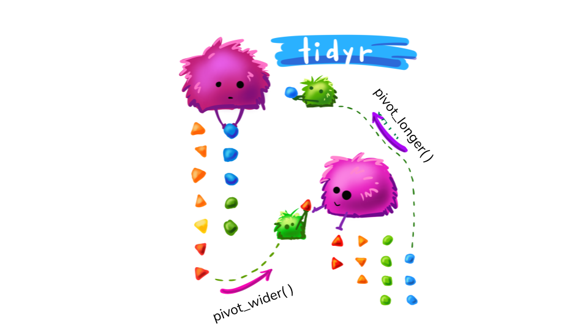
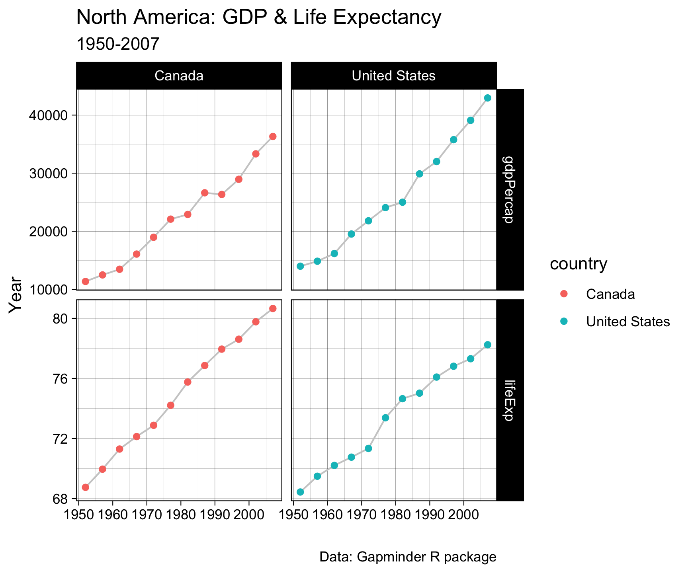
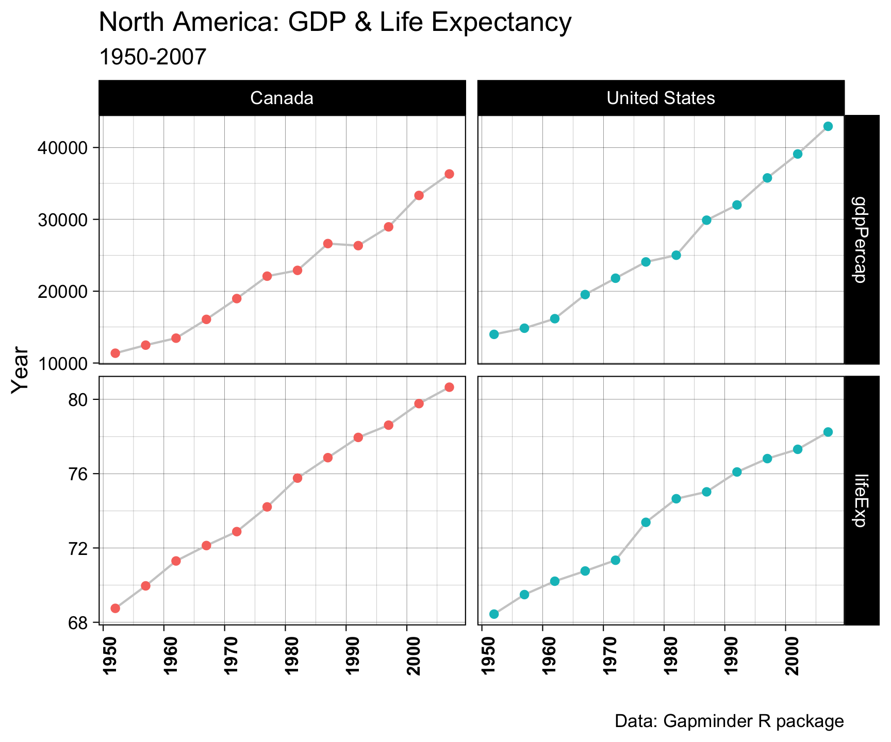

Lecture 09
Formats & EDA
2025-02-16
Pivots
Data structure vs Data format
data.framesare a list with atomic vecotrs of the same length.data.frames(and list and vector) are data structuresThe format of the
data.framehowever can be widely variable….
For example …
You can represent the same underlying data in multiple ways. Each of these stores data for country, population and cases in a different way….
# A tibble: 8 × 4
country year type value
<fct> <int> <chr> <dbl>
1 Brazil 1952 lifeExp 50.9
2 Brazil 1952 gdpPercap 2109.
3 Brazil 2007 lifeExp 72.4
4 Brazil 2007 gdpPercap 9066.
5 India 1952 lifeExp 37.4
6 India 1952 gdpPercap 547.
7 India 2007 lifeExp 64.7
8 India 2007 gdpPercap 2452.
# A tibble: 4 × 3
country year values
<fct> <int> <chr>
1 Brazil 1952 50.917 / 2108.944355
2 Brazil 2007 72.39 / 9065.800825
3 India 1952 37.373 / 546.5657493
4 India 2007 64.698 / 2452.210407# A tibble: 4 × 4
country year lifeExp gdpPercap
<fct> <int> <dbl> <dbl>
1 Brazil 1952 50.9 2109.
2 Brazil 2007 72.4 9066.
3 India 1952 37.4 547.
4 India 2007 64.7 2452.
# A tibble: 2 × 3
country `1952` `2007`
<fct> <dbl> <dbl>
1 Brazil 2109. 9066.
2 India 547. 2452.
# A tibble: 2 × 3
country `1952` `2007`
<fct> <dbl> <dbl>
1 Brazil 50.9 72.4
2 India 37.4 64.7Data Format – the quest for “tidy data”
These are all representations of the same underlying data, but they are not equally easy to use. One dataset, the tidy dataset, will be much easier to work with inside the tidyverse.
Tidy data demands three interrelated rules
Each variable must have its own column.
Each observation must have its own row.
Each value must have its own cell.

It’s impossible to only satisfy \(2/3\) so … an simpler guideline:
- Put each dataset in a tibble.
- Put each variable in a column.
The world is messy …
For most real problems, you’ll need to do some cleaning/tidying
Once you understand what data you have, you typically have to resolve one of two common issues:
- One variable might be spread across multiple columns.
- One observation might be scattered across multiple rows.
To fix these, we look at the
tidyrpackage (within the tidyverse)
Longer
- A common issues is a dataset where some of the column names are not names, but rather values we want:
# A tibble: 2 × 3
country `1952` `2007`
<fct> <dbl> <dbl>
1 Brazil 50.9 72.4
2 India 37.4 64.7Longer (and narrower)
- To make the column names an attribute of the dataset, we need to pivot the data
- This pivot will effectively make the data longer and narrower…
- To do this we look to
tidyr::pivot_longer()
Longer
Putting it together …
long4a = lifeExp_tab |>
pivot_longer(c(`1952`, `2007`), names_to = "year", values_to = "lifeExp")
long4b = gdpPercap_tab |>
pivot_longer(c(`1952`, `2007`), names_to = "year", values_to = "gdpPercap")
left_join(long4a, long4b)
# A tibble: 4 × 4
country year lifeExp gdpPercap
<fct> <chr> <dbl> <dbl>
1 Brazil 1952 50.9 2109.
2 Brazil 2007 72.4 9066.
3 India 1952 37.4 547.
4 India 2007 64.7 2452.Wider (and shorter)
pivot_wider()is the opposite ofpivot_longer().We use it to solve the opposite problem… when an observation is scattered across multiple rows.
Wider (and shorter)
- To allow an attribute to define a variable name, we need to pivot the data
- This pivot will effectively make the data wider and shorter
- To do this we look to
tidyr::pivot_wider()

Wider
When wide is right!
- All
dplyrdata manipulation works on columns and rows - So when we are
filtering,selecting,mutating,grouping, andsummarizingwide data is best
When long is right!
- Yesterday we noted that ggplot prefers data to be long.
- This is because when applying aesthetics or facets we want the variable to be an attribute of the dataset
For example …
Wide

Pivot within workflow…
# A tibble: 1,704 × 6
country continent year lifeExp pop gdpPercap
<fct> <fct> <int> <dbl> <int> <dbl>
1 Afghanistan Asia 1952 28.8 8425333 779.
2 Afghanistan Asia 1957 30.3 9240934 821.
3 Afghanistan Asia 1962 32.0 10267083 853.
4 Afghanistan Asia 1967 34.0 11537966 836.
5 Afghanistan Asia 1972 36.1 13079460 740.
6 Afghanistan Asia 1977 38.4 14880372 786.
7 Afghanistan Asia 1982 39.9 12881816 978.
8 Afghanistan Asia 1987 40.8 13867957 852.
9 Afghanistan Asia 1992 41.7 16317921 649.
10 Afghanistan Asia 1997 41.8 22227415 635.
# ℹ 1,694 more rowsPivot within workflow…
# A tibble: 60 × 6
country continent year lifeExp pop gdpPercap
<fct> <fct> <int> <dbl> <int> <dbl>
1 Canada Americas 1952 68.8 14785584 11367.
2 Canada Americas 1957 70.0 17010154 12490.
3 Canada Americas 1962 71.3 18985849 13462.
4 Canada Americas 1967 72.1 20819767 16077.
5 Canada Americas 1972 72.9 22284500 18971.
6 Canada Americas 1977 74.2 23796400 22091.
7 Canada Americas 1982 75.8 25201900 22899.
8 Canada Americas 1987 76.9 26549700 26627.
9 Canada Americas 1992 78.0 28523502 26343.
10 Canada Americas 1997 78.6 30305843 28955.
# ℹ 50 more rowsPivot within workflow…
# A tibble: 60 × 4
country year lifeExp gdpPercap
<fct> <int> <dbl> <dbl>
1 Canada 1952 68.8 11367.
2 Canada 1957 70.0 12490.
3 Canada 1962 71.3 13462.
4 Canada 1967 72.1 16077.
5 Canada 1972 72.9 18971.
6 Canada 1977 74.2 22091.
7 Canada 1982 75.8 22899.
8 Canada 1987 76.9 26627.
9 Canada 1992 78.0 26343.
10 Canada 1997 78.6 28955.
# ℹ 50 more rowsPivot within workflow…
# A tibble: 120 × 4
country year name value
<fct> <int> <chr> <dbl>
1 Canada 1952 lifeExp 68.8
2 Canada 1952 gdpPercap 11367.
3 Canada 1957 lifeExp 70.0
4 Canada 1957 gdpPercap 12490.
5 Canada 1962 lifeExp 71.3
6 Canada 1962 gdpPercap 13462.
7 Canada 1967 lifeExp 72.1
8 Canada 1967 gdpPercap 16077.
9 Canada 1972 lifeExp 72.9
10 Canada 1972 gdpPercap 18971.
# ℹ 110 more rowsPivot within workflow…
Pivot within workflow…
Pivot within workflow…
Pivot within workflow…
gapminder |>
filter(country %in%
c("Canada", "United States", "Mexico", "Nicaragua", "Honduras")) |>
select(country, year, lifeExp, gdpPercap) |>
pivot_longer(cols = c('lifeExp', 'gdpPercap')) |>
ggplot(aes(x = year, y = value)) +
geom_line(col = 'gray80') +
geom_point(aes(col = country)) +
labs(x = "", y = "Year",
title = "North America: GDP & Life Expectancy",
subtitle = "1950-2007",
caption = "Data: Gapminder R package")Pivot within workflow…
gapminder |>
filter(country %in%
c("Canada", "United States", "Mexico", "Nicaragua", "Honduras")) |>
select(country, year, lifeExp, gdpPercap) |>
pivot_longer(cols = c('lifeExp', 'gdpPercap')) |>
ggplot(aes(x = year, y = value)) +
geom_line(col = 'gray80') +
geom_point(aes(col = country)) +
labs(x = "", y = "Year",
title = "North America: GDP & Life Expectancy",
subtitle = "1950-2007",
caption = "Data: Gapminder R package") +
facet_grid(name~country, scales = "free_y")Pivot within workflow…
gapminder |>
filter(country %in%
c("Canada", "United States", "Mexico", "Nicaragua", "Honduras")) |>
select(country, year, lifeExp, gdpPercap) |>
pivot_longer(cols = c('lifeExp', 'gdpPercap')) |>
ggplot(aes(x = year, y = value)) +
geom_line(col = 'gray80') +
geom_point(aes(col = country)) +
labs(x = "", y = "Year",
title = "North America: GDP & Life Expectancy",
subtitle = "1950-2007",
caption = "Data: Gapminder R package") +
facet_grid(name~country, scales = "free_y") +
theme_linedraw()
Pivot within workflow…
gapminder |>
filter(country %in%
c("Canada", "United States", "Mexico", "Nicaragua", "Honduras")) |>
select(country, year, lifeExp, gdpPercap) |>
pivot_longer(cols = c('lifeExp', 'gdpPercap')) |>
ggplot(aes(x = year, y = value)) +
geom_line(col = 'gray80') +
geom_point(aes(col = country)) +
labs(x = "", y = "Year",
title = "North America: GDP & Life Expectancy",
subtitle = "1950-2007",
caption = "Data: Gapminder R package") +
facet_grid(name~country, scales = "free_y") +
theme_linedraw() +
theme(legend.position = "none")Pivot within workflow…
gapminder |>
filter(country %in%
c("Canada", "United States", "Mexico", "Nicaragua", "Honduras")) |>
select(country, year, lifeExp, gdpPercap) |>
pivot_longer(cols = c('lifeExp', 'gdpPercap')) |>
ggplot(aes(x = year, y = value)) +
geom_line(col = 'gray80') +
geom_point(aes(col = country)) +
labs(x = "", y = "Year",
title = "North America: GDP & Life Expectancy",
subtitle = "1950-2007",
caption = "Data: Gapminder R package") +
facet_grid(name~country, scales = "free_y") +
theme_linedraw() +
theme(legend.position = "none") +
theme(axis.text.x = element_text(angle = 90, face = "bold"))
Pivot within workflow…
gapminder |>
filter(country %in%
c("Canada", "United States", "Mexico", "Nicaragua", "Honduras")) |>
select(country, year, lifeExp, gdpPercap) |>
pivot_longer(cols = c('lifeExp', 'gdpPercap')) |>
ggplot(aes(x = year, y = value)) +
geom_line(col = 'gray80') +
geom_point(aes(col = country)) +
labs(x = "", y = "Year",
title = "North America: GDP & Life Expectancy",
subtitle = "1950-2007",
caption = "Data: Gapminder R package") +
facet_grid(name~country, scales = "free_y") +
theme_linedraw() +
theme(legend.position = "none") +
theme(axis.text.x = element_text(angle = 90, face = "bold")) +
theme(plot.subtitle = element_text(color = "navy", face = "bold"))Pivot within workflow…
gapminder |>
filter(country %in%
c("Canada", "United States", "Mexico", "Nicaragua", "Honduras")) |>
select(country, year, lifeExp, gdpPercap) |>
pivot_longer(cols = c('lifeExp', 'gdpPercap')) |>
ggplot(aes(x = year, y = value)) +
geom_line(col = 'gray80') +
geom_point(aes(col = country)) +
labs(x = "", y = "Year",
title = "North America: GDP & Life Expectancy",
subtitle = "1950-2007",
caption = "Data: Gapminder R package") +
facet_grid(name~country, scales = "free_y") +
theme_linedraw() +
theme(legend.position = "none") +
theme(axis.text.x = element_text(angle = 90, face = "bold")) +
theme(plot.subtitle = element_text(color = "navy", face = "bold")) +
theme(plot.caption = element_text(color = "gray50", face = "italic"))Internal groupings
nest()andmap()are functions from thetidyverse, primarily used with thetidyrandpurrrpackages.- They allow for efficient list-column workflows and functional programming in R.
- Useful for grouped operations, iterative calculations, and data wrangling.
What is nest()?
nest()converts a grouped dataset into a list-column format.- It allows you to keep related observations together in nested data frames.
Explanation: - The data tibble contains two groups (A and B) with corresponding x values. - nest(data = -group) creates a new tibble where each group has a nested data frame containing the x values.
What is map()?
map()is from the purrr package and applies a function over a list or vector.- It works similarly to
lapply()but with better integration intotidyverseworkflows.
Explanation: - The .x notation inside map() refers to the data frame stored in the data column. - .x$x accesses the x column within each nested data frame to compute the mean.
Combining nest() and map()
nest()structures the data into groups.map()applies functions to each nested dataset.- Can be used for modeling, summaries, and transformations.
Example: Linear Regression by Group
What is broom?
- The broom package helps tidy up model outputs for further analysis or reporting.
- It converts model objects (like from lm()) into tidy data frames that are easy to manipulate.
Key functions from broom include:
tidy() for converting model coefficients and statistics into a data frame. glance() for providing a one-row summary of a model’s performance. augment() for adding model diagnostics (e.g., residuals, fitted values) to the original data.
Extracting Model Summaries
model_results |>
mutate(summary = map(model, broom::tidy)) |>
unnest(summary)
# A tibble: 2 × 8
group data model term estimate std.error statistic p.value
<chr> <list> <list> <chr> <dbl> <dbl> <dbl> <dbl>
1 A <tibble [3 × 1]> <lm> (Intercept) 2 0.577 3.46 0.0742
2 B <tibble [3 × 1]> <lm> (Intercept) 5 0.577 8.66 0.0131Explanation: - The tidy() function extracts the coefficients from the linear models stored in the model column and formats them into a tidy data frame. - This makes it easier to summarize or report on the results.
Conclusion
nest() is useful for grouping and restructuring data. map() enables functional programming and efficient iteration. broomprovides a way to tidy up model outputs for easier interpretation and reporting.
Together, they provide a powerful framework for handling grouped analyses in R.
Many identically structured data.frames
Binding rows
bind_rows()andbind_cols()are functions from thedplyrpackage.- They are used to combine data frames by rows or columns.
bind_rows()
- Used to stack data frames on top of each other.
- Useful when datasets have the same column names and types.
bind_cols()
- Used to combine data frames side by side.
- Requires the data frames to have the same number of rows.
Summary
bind_rows(): Combines data frames vertically.bind_cols(): Combines data frames horizontally.- Both functions preserve column types and handle missing values where necessary.